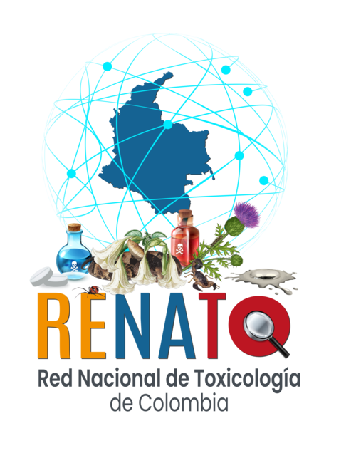

Título del documento
Descargar
Sin resultados
No se encontraron documentos con los filtros aplicados.

Biblioteca de artículos científicos, informes epidemiológicos, manuales, protocolos, boletines y tesis relacionadas con toxicología en salud pública.
No se encontraron documentos con los filtros aplicados.